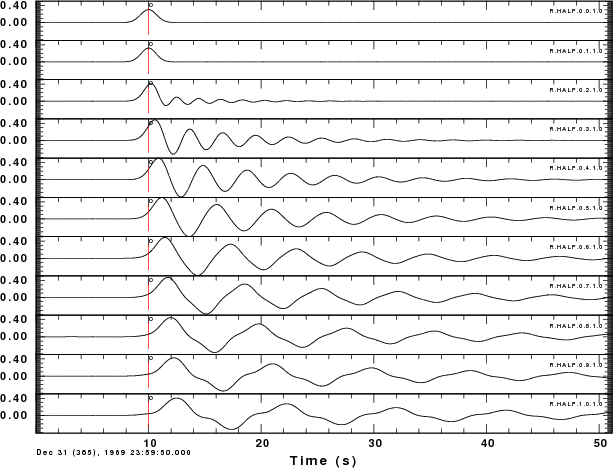
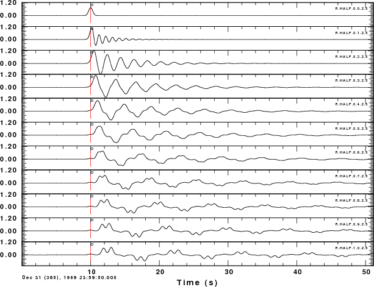
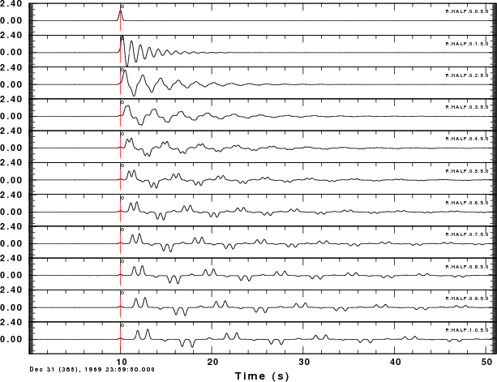
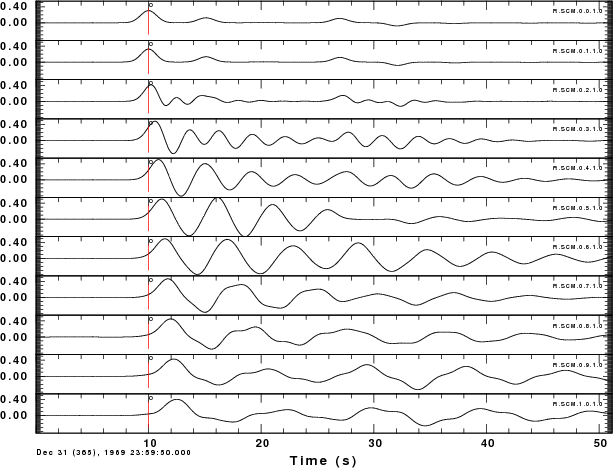
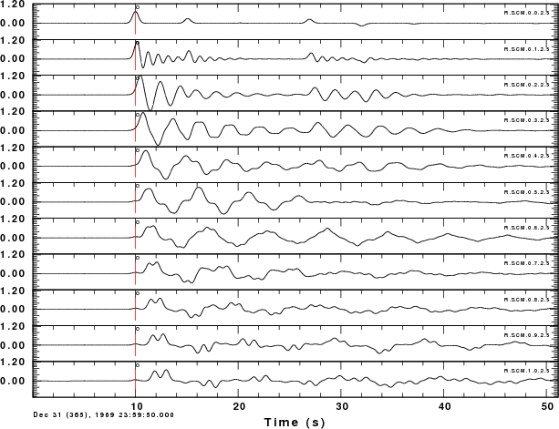
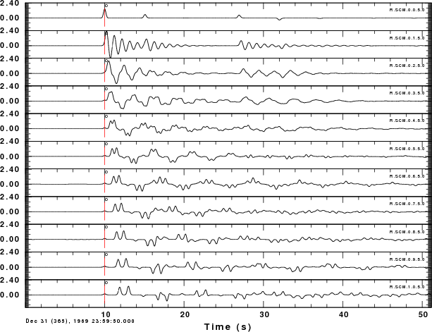
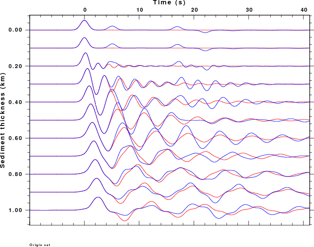
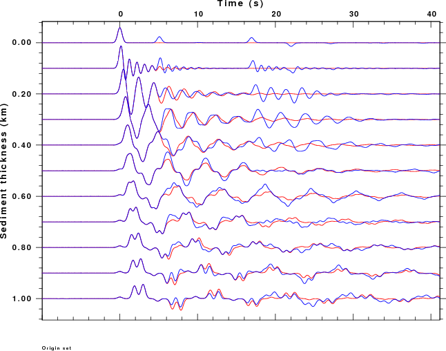
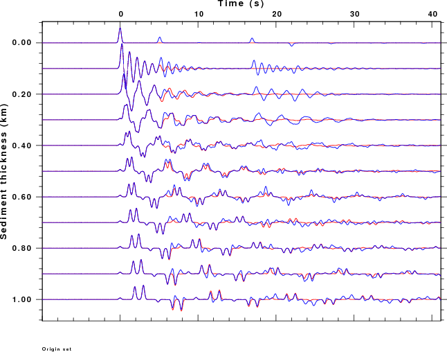

gunzip -c RFTN3.tgz | tar xvf - cd RFTN3 ./DOITThe script will create the figures shown below. The script requires CPS programs hrftn96, gsac and plotnps and the ImageMagick package program convert to transform the EPS files to a PNG image.
|  Halfspace model for ALP=1.0 |
 Halfspace model for ALP=2.5 |
 Halfspace model for ALP=5.0 |
|  Crustal model for ALP=1.0 |
 Crustal model for ALP=2.5 |
 Crustal model for ALP=5.0 |
|  Overlay of halfspace (red) and crustal (blue) base models for ALP=1.0 |
 Overlay of halfspace (red) and crustal (blue) base models for ALP=2.5 |
 Overlay of halfspace (red) and crustal (blue) base models for ALP=5.0 |